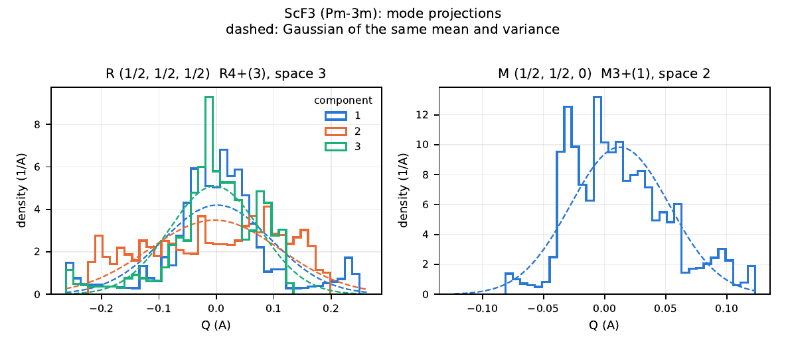

crystod-md#
MD-trajectory analyses. Three mode flags: --adp (atomic displacement
parameters as CIF), --summary (time-averaged lattice statistics) and
--project (projection onto the symmetry-adapted modes of the parent cell,
or with --yaml onto its phonon eigenvectors).
I want to … |
command |
|---|---|
get the ADPs of an MD run as a CIF file |
|
get the time-averaged cell of an NpT run |
|
follow the R4+ / M3+ amplitudes of an MD run and see whether they are single- or double-peaked |
|
check that the projected modes carry all of the displacement (sum rule) |
|
compare the fluctuation of every phonon mode with the harmonic model (effective frequencies) |
|
project every arm of a star (the three M arms of a cubic parent) |
|
06-01. ADPs from an MD trajectory (--adp)#
Example directory: example/06-01_xdatcar2adp (testsuite section 06-01); after pip install: crystod-example 06-01
Note
The example/... paths on this page are those of a clone of the repository,
used from its root. After pip install CrystOD, run crystod-example CC-NN (the
number of the example directory) in your working directory first: it copies
that directory and the shared test_POSCARs/ into ./example/, and the
commands then run from there unchanged (see crystod-example).
What are the time-averaged structure and the anisotropic displacement
parameters (ADPs, U_ij: the thermal ellipsoids) of an MD run? crystod-md --adp computes them from a molecular-dynamics XDATCAR trajectory of a
supercell, with the constraints of the site symmetry, and writes them as a
CIF file.
See also
Theory: Atomic displacement parameters from an MD trajectory — how the trajectory is folded onto the unit-cell sites and averaged over the symmetry-equivalent atoms, the site-symmetry projector that keeps an isotropic tensor isotropic in every cell, and the comparison with the original script.
Input |
Command |
Output |
|---|---|---|
|
|
terminal: the time-averaged unit cell and its space group, the ADP constraints of every Wyckoff position, |
the same, other file names |
add |
the same |
The example is an NpT run of a 4x4x4 supercell of ScF3 at 300 K;
XDATCAR_every10 holds every 10th frame of its equilibrated part
(configurations 2000 to 5000: 301 frames, 3.1 MB), so no frame is discarded
(--start-step 0):
cd example/06-01_xdatcar2adp/ScF3_Pm-3m_NpT_300K
crystod-md --adp --dim 4 4 4 --start-step 0 --xdatcar XDATCAR_every10 --output ADP.cif
* Input *
Supercell size : [4, 4, 4]
Start step : 0
Input file : XDATCAR_every10
Output file : ADP.cif
Reading XDATCAR... (this may take a while)
* Supercell info *
atoms : 256
composition : {'Sc': 64, 'F': 192}
analyzed steps : 301
Number of unit-cell sites (groups): 4
Expected replicas per group : 64
* Time-averaged unit cell *
Space group: Pm-3m (No. 221)
Atoms in unit cell : 4
Symmetry operations : 48
Asymmetric-unit sites: 2
Sc0: mult=1, coords=(1.00000, 0.99999, 1.00000)
F1: mult=3, coords=(0.00003, 0.50001, 0.00006)
* ADP constraints per Wyckoff position *
Wyckoff 0 (Sc): site-symmetry order=48, U11=U22, U11=U33, U22=U33, U12=0, U13=0, U23=0
Wyckoff 1 (F): site-symmetry order=16, U11=U33, U12=0, U13=0, U23=0
* Trajectory unwrapping *
Coordinate unwrapping done: 256 atoms x 301 steps
* Atomic displacement parameters *
Site Ueq (A^2) Constraint
------------------------------------------------------------
Sc0 0.005477 U11=U22, U11=U33, U22=U33, U12=0, U13=0, U23=0
F1 0.023486 U11=U33, U12=0, U13=0, U23=0
* Output files *
Saved: ADP.cif
The written CIF ends with the symmetry-constrained _atom_site_aniso_U_*
loop, ready for thermal-ellipsoid display in VESTA — for NpT ScF3 at 300 K the
F ellipsoids are strongly anisotropic (U11 = U33 >> U22, the pancake shape
perpendicular to the Sc-F-Sc bond that drives the negative thermal expansion),
while Sc stays isotropic by symmetry:
loop_
_atom_site_aniso_label
_atom_site_aniso_U_11
_atom_site_aniso_U_22
_atom_site_aniso_U_33
_atom_site_aniso_U_23
_atom_site_aniso_U_13
_atom_site_aniso_U_12
Sc0 0.00548 0.00548 0.00548 0.00000 0.00000 0.00000
F1 0.03260 0.00526 0.03260 0.00000 0.00000 0.00000
How to read the output.
* Supercell info *: the atoms and the composition of the MD cell, the analysed steps, the unit-cell sites (groups) the atoms are folded onto and the replicas expected per group.* Time-averaged unit cell *: the space group of the time-averaged unit cell (spglib,--tolerance) and its asymmetric-unit sites with their multiplicities and averaged fractional coordinates.* ADP constraints per Wyckoff position *: the order of the site-symmetry group and the relations it imposes on U. The constraint text lists only relations the projector imposes (Uij=0,Uij=Ukl,Uij=-Ukl); a site constrained only by relations such asU12 = U22/2(a two-fold axis along a of a hexagonal cell) readsgeneral linear constraints only, and one without constraintsno constraint.* Trajectory unwrapping *: atoms that cannot be mapped onto their representative within--toleranceare left out of the statistics and named, with their 1-based XDATCAR atom numbers, in aWARNING: N atom(s) could not be mapped ...line of this block.Ueq: that of the tensor written to the CIF (one third of the trace of its Cartesian form), so the table and the CIF always agree.The CIF opens with the comment line
# generated using crystod-md --adpand contains the cell, the symmetry operations, the asymmetric-unit sites, and the_atom_site_aniso_U_*loop, ready for thermal-ellipsoid display in VESTA.
The full trajectory
The full 41.7 MB XDATCAR of the run (4001 frames; not in the pip package)
with --start-step 1000 analyses all 3001 frames of the same
part and gives the same to 0.2 % (Ueq 0.005485 and 0.023521 A^2).
Options
Options.
option |
meaning |
|---|---|
|
the MD supercell size relative to the unit cell, given as three diagonal values or a nine-value diagonal matrix, quoted or unquoted ( |
|
discards the first N MD steps as equilibration (default 0) |
|
the trajectory (default |
|
the CIF file (default |
|
the trajectory format (currently |
|
how far an atom may sit from its site and still be grouped with it (default 0.1) |
|
the symmetry tolerance of the time-averaged unit cell (default 0.1, a Cartesian distance in Angstrom); the same distance selects the site-symmetry operations of each site and maps every site onto its asymmetric-unit representative |
Both fixed-cell and variable-cell (NpT, repeated-header) XDATCAR files are supported.
From Python
In Python, md.get_site_symmetry_operations(coords, rotations, translations, symprec, lattice=L) and md.build_symmetry_projector(rotations, lattice=L)
take the lattice (rows = lattice vectors, Angstrom) for the Angstrom
tolerance and the matrices M; without lattice= they keep the fractional
tolerance and use R itself, which is exact only for the cells with M = R
(Site-symmetry projector of the ADP tensor).
Based on script/xdatcar_to_adp.py by Ko Sato, with a fast built-in parser in
place of the pymatgen reader.
06-02. Trajectory summary (--summary)#
Example directory: example/06-01_xdatcar2adp (testsuite sections 06-01 and 06-02: --summary runs in the CLI-regression section); after pip install: crystod-example 06-01
crystod-md --summary reports summary statistics of the same trajectory: the
time-averaged lattice parameters (a, b, c, alpha, beta, gamma) and cell volume
with standard deviations over the selected step range — useful for extracting
the equilibrium cell from an NpT run:
Input |
Command |
Output |
|---|---|---|
|
|
terminal: the mean +/- standard deviation of a, b, c, alpha, beta, gamma and V over the analysed steps, and V/atom; the same report in |
the same, a window of steps |
|
the same over steps 100 to 200 (inclusive) |
the same |
add |
the report on the terminal only |
crystod-md --summary --start-step 0 --xdatcar XDATCAR_every10
crystod-md --summary --xdatcar XDATCAR_every10 --start-step 100 --end-step 200 # inclusive step range
* Input *
Input file : XDATCAR_every10
Reading XDATCAR... (this may take a while)
* Trajectory info *
atoms : 256
composition : {'Sc': 64, 'F': 192}
total steps : 301
analyzed steps : 301 (step 0 .. 300)
* Time-averaged cell (mean +/- std) *
a (A) : 16.150052 +/- 0.077248
b (A) : 16.155792 +/- 0.067524
c (A) : 16.154326 +/- 0.068180
alpha (deg) : 89.954570 +/- 0.214752
beta (deg) : 89.990552 +/- 0.261860
gamma (deg) : 89.998191 +/- 0.218285
V (A^3) : 4214.959148 +/- 45.952311
V/atom (A^3): 16.464684
NOTE: XDATCAR stores no energies or temperatures; Etot/T averages require OSZICAR/vasprun.xml.
* Output files *
Report written to: MDSUM_ScF3 (this output)
--start-step, --xdatcar, and --format behave exactly as in --adp mode;
--end-step optionally truncates the range (default: last step). Note that
XDATCAR stores no energies or temperatures, so Etot/T averages are outside the
scope of --summary. Based on script/md_summary.py.
06-03. Mode projection of an MD trajectory (--project)#
Example directory: example/06-03_md_projection (testsuite section 06-03); after pip install: crystod-example 06-03
How far does an MD run move along each symmetry-adapted displacement pattern
of the parent structure, and with what statistics? --project gives the
order-parameter time series Q(t) of every irrep, mode space and component at
the chosen q points. Its typical use is a crystal near a structural
instability, such as the octahedral tilts R4+ and M3+ of a perovskite: the
width of the distribution of Q tells how large the fluctuations are, and its
shape whether they are displacive (one well, a Gaussian about Q = 0) or
order-disorder (two populated states +Q0 and -Q0).
See also
Theory: Mode amplitudes of an MD trajectory —
how the amplitude Q is normalized and how it compares with the amplitudes of
--modulation and of AMPLIMODES, the synthetic check, what the statistics
measure, the discussion of the ScF3 run, and the sum rule and its comparison
with the ADPs.
Input |
Command |
Output |
|---|---|---|
parent primitive POSCAR ( |
|
terminal: the statistics of Q for every irrep, mode space and component, the pooled components, the sum rule; files: |
the same |
|
every commensurate q: the sum rule shows that the projected modes carry all of the displacement |
the same |
add |
every arm of the star of each q (the three M arms of a cubic parent) |
the same |
add |
the report on the terminal only (the CSV and PDF files are still written) |
|
|
one time series per phonon mode and its effective frequency (below) |
Every frame is matched to the ideal supercell of the parent primitive cell
(-c, --dim), the displacements are projected onto the bases that
crystod-phonon --vibration lists (same ISO-IR labels, mode-space and
component numbers for a parent in the standard setting), and the statistics
of every component are tabulated. The run is the ScF3 trajectory of section 06-01
(crystod-example 06-03 copies 06-01_xdatcar2adp and 04-07_modulation along):
cd example/06-03_md_projection
crystod-md --project -c ../test_POSCARs/221_PPOSCAR_ScF3 --dim 4 4 4 \
--xdatcar ../06-01_xdatcar2adp/ScF3_Pm-3m_NpT_300K/XDATCAR_every10 --start-step 0 \
--qpoint R M -o MDPROJ_ScF3_300K
* Input *
Parent cell : ../test_POSCARs/221_PPOSCAR_ScF3
Space group : Pm-3m (No. 221)
Supercell (dim) : 4 4 4 (64 parent cells, 256 atoms)
Trajectory : ../06-01_xdatcar2adp/ScF3_Pm-3m_NpT_300K/XDATCAR_every10 (301 frames)
Frames used : 301 (step 0 .. 300; configuration 2000 .. 5000)
Lattice : each frame's own cell (fractional -> Cartesian)
* Site matching *
Sites matched : 256 (one-to-one, by element and nearest image
of the time-averaged position)
Uniform shift : (+0.0000, +0.0000, +0.0000) A (mean offset of the averaged structure)
Largest offset : 0.0361 A (atom 222, uniform shift removed)
Drift : the mass-weighted centre-of-mass displacement is removed
from every frame (rms 0.0000 A)
* Q points *
R (1/2, 1/2, 1/2)
M (1/2, 1/2, 0)
* Mode projection at R (1/2, 1/2, 1/2) *
irrep space component <Q> (A) sqrt<Q^2> (A) <|Q|> (A) ratio kurtosis n_eff shape
R1+(1) 1 1 -0.00004 0.00424 0.00344 0.811 -0.31 301 single-peaked
R3+(2) 2 1 -0.00007 0.00498 0.00395 0.792 0.50 301 single-peaked
R3+(2) 2 2 -0.00026 0.00664 0.00545 0.820 -0.43 301 single-peaked
R4+(3) 3 1 0.00146 0.09486 0.06716 0.708 1.34 16 single-peaked
R4+(3) 3 2 -0.00326 0.11411 0.09801 0.859 -1.08 19 single-peaked
R4+(3) 3 3 -0.00301 0.07826 0.05798 0.741 1.40 19 single-peaked
R4-(3) 4 1 -0.00005 0.00467 0.00368 0.789 -0.13 200 single-peaked
R4-(3) 4 2 -0.00014 0.00413 0.00330 0.800 -0.31 208 single-peaked
R4-(3) 4 3 -0.00018 0.00415 0.00335 0.809 0.30 205 single-peaked
R5+(3) 5 1 0.00001 0.01243 0.01043 0.839 -0.72 136 single-peaked
R5+(3) 5 2 0.00026 0.00677 0.00533 0.786 0.02 135 single-peaked
R5+(3) 5 3 0.00004 0.01060 0.00819 0.772 0.15 135 single-peaked
* Pooled components and norm |Q| at R (1/2, 1/2, 1/2) *
irrep space comps sqrt<Q^2> (A) ratio kurtosis n_eff shape <|Q|> (A) |Q| ratio Gaussian
R3+(2) 2 2 0.00587 0.800 0.02 602 single-peaked 0.00734 0.884 0.886
R4+(3) 3 3 0.09686 0.768 0.20 55 single-peaked 0.14807 0.883 0.921
R4-(3) 4 3 0.00432 0.798 -0.02 613 single-peaked 0.00687 0.918 0.921
R5+(3) 5 3 0.01021 0.781 0.09 406 single-peaked 0.01596 0.902 0.921
* Mode projection at M (1/2, 1/2, 0) *
irrep space component <Q> (A) sqrt<Q^2> (A) <|Q|> (A) ratio kurtosis n_eff shape
M1+(1) 1 1 -0.00011 0.00387 0.00301 0.778 0.25 301 single-peaked
M3+(1) 2 1 0.01236 0.04246 0.03280 0.773 -0.08 29 single-peaked
M3-(1) 3 1 -0.00011 0.00464 0.00372 0.802 0.04 77 single-peaked
M3-(1) 4 1 -0.00030 0.00600 0.00474 0.791 0.19 175 single-peaked
M5+(2) 5 1 -0.00010 0.00747 0.00597 0.799 0.10 92 single-peaked
M5+(2) 5 2 0.00061 0.01563 0.01331 0.851 -0.88 91 single-peaked
M5-(2) 6 1 -0.00037 0.00421 0.00322 0.763 1.91 176 single-peaked
M5-(2) 6 2 0.00076 0.00395 0.00290 0.733 1.12 178 single-peaked
M5-(2) 7 1 -0.00120 0.01457 0.01126 0.773 0.22 88 single-peaked
M5-(2) 7 2 0.00106 0.01541 0.01250 0.811 -0.19 89 single-peaked
M2+(1) 8 1 -0.00008 0.00527 0.00399 0.757 0.40 301 single-peaked
M4+(1) 9 1 0.00005 0.01089 0.00883 0.811 -0.22 137 single-peaked
* Pooled components and norm |Q| at M (1/2, 1/2, 0) *
irrep space comps sqrt<Q^2> (A) ratio kurtosis n_eff shape <|Q|> (A) |Q| ratio Gaussian
M5+(2) 5 2 0.01225 0.787 0.04 183 single-peaked 0.01538 0.888 0.886
M5-(2) 6 2 0.00408 0.748 1.63 354 single-peaked 0.00487 0.844 0.886
M5-(2) 7 2 0.01499 0.792 0.02 177 single-peaked 0.01852 0.874 0.886
* Sum rule *
sum of <Q^2> over the projected components : 0.031403 A^2
<|u|^2> / N (all atoms, drift removed) : 0.226273 A^2
fraction covered : 13.88 %
q points covered : 2 of 64 commensurate (a -q partner counts with its q)
...
* Output files *
MDPROJ_ScF3_300K_R.csv
MDPROJ_ScF3_300K_M.csv
MDPROJ_ScF3_300K_hist.pdf
Report written to: MDPROJ_ScF3_300K_stats.txt (this output)

The figure is the histogram file of the same projection with --irrep R4+ M3+
on the full trajectory of section 06-01 (not in the pip package; --start-step 1000,
3001 frames): one panel per mode space, one step histogram per component,
dashed: the Gaussian of the same mean and variance. XDATCAR_every10 gives
the same shapes with coarser bins.
How to read the output.
irrep,space,component: the ISO-IR label, the mode-space number and the component number, ascrystod-phonon --vibrationlists them. At a q that is not time-reversal invariant each complex row gives two real patterns, components1cand1s, and of q and -q only one is projected (--qpoint allkeeps the first of each pair; a -q given explicitly is reported as skipped).<Q>,sqrt<Q^2>,<|Q|>: the mean, the root mean square and the mean absolute value of Q(t), in Angstrom; Q is the displacement norm per parent primitive cell carried by the pattern. In a structure with the parent symmetry on average,<Q>of every non-identity irrep is zero to within the sampling; a nonzero<Q>is a static distortion (or a sampling artefact of a slow mode).ratio=<|Q|>/sqrt<Q^2>: sqrt(2/pi) = 0.798 for a Gaussian about Q = 0 (a displacive fluctuation in one well), 1 for two equally populated states +Q0 and -Q0 (order-disorder), 0.900 for a sinusoid.kurtosis: the excess kurtosis about the mean, 0 for a Gaussian, -2 for two sharp states, -1.5 for a sinusoid, positive for heavy tails.n_eff: the number of frames divided by the integrated autocorrelation time of Q(t) (summed to the first zero of the autocorrelation function), the number of effectively independent samples. The ratio and the kurtosis scatter by roughly 1/sqrt(n_eff); with n_eff below about 50 a single component says little about the shape. For a weakly damped oscillation n_eff is an upper bound.shape: the histogram density at Q = 0 against its maximum (odd number of bins, symmetric about 0): below 0.5 with at least 10 % of the samples on each side,double-peaked (hint); below 0.5 with the weight on one side,off-center; elsesingle-peaked;zerofor a component that does not move andn/afor fewer than 20 frames. It is a hint, not a test: a coherent oscillation of large amplitude (a sinusoid) also reads as double-peaked.
For ScF3 at 300 K every irrep is single-peaked about Q = 0, as expected for the cubic phase, so the fluctuations are displacive. The tilts carry by far the largest amplitudes but are also the slowest modes (n_eff 16-19 for each R4+ component); the numbers are discussed in Tilt fluctuations of ScF3 at 300 K.
More on reading the output
* Site matching *: every atom is matched one-to-one to an ideal site of the parent supercell, by element and nearest image of its time-averaged position; the uniform shift (the mean offset of the averaged structure) and the largest remaining offset are printed, and the mass-weighted centre-of-mass displacement is removed from every frame (its rms is printed).* Pooled components and norm |Q| *: for a mode space with several components, the samples of its components pooled (columnssqrt<Q^2>toshape);<|Q|>is the mean norm of the component vector, and|Q| ratio=<|Q|>/sqrt<|Q|^2>is compared with its value for an isotropic Gaussian in that many components (Gaussian: 0.886 for two, 0.921 for three). When the rms values of the components differ by more than a factor 3 (or one is zero), the pooled ratio, kurtosis and n_eff are not printed and the shape readsunequal.* Sum rule *: the sum of<Q^2>over the projected components against<|u|^2> / N, the mean-square displacement per parent cell of all atoms after drift removal, the fraction covered and the number of commensurate q points covered.
Sum rule
Sum rule. The * Sum rule * block prints both sides for the q actually
projected and the fraction covered; with --qpoint all (and no --irrep)
the two agree to rounding:
crystod-md --project -c ../test_POSCARs/221_PPOSCAR_ScF3 --dim 4 4 4 \
--xdatcar ../06-01_xdatcar2adp/ScF3_Pm-3m_NpT_300K/XDATCAR_every10 --start-step 0 \
--qpoint all --no-histogram -o all/MDPROJ_ScF3_300K
...
* Sum rule *
sum of <Q^2> over the projected components : 0.226273 A^2
<|u|^2> / N (all atoms, drift removed) : 0.226273 A^2
fraction covered : 100.00 %
q points covered : 64 of 64 commensurate (a -q partner counts with its q)
relative difference (complete basis) : 0.0e+00
...
R and the M arm (1/2, 1/2, 0) alone carry 13.9 % of it (the first run).
Options and files
Options and files.
--qpoint: labels (R M X GM, the namescrystod-phonon --vibration --list-qpointsprints), coordinates (--qpoint 1/2 1/2 0, any number of points in one list) orall(every q commensurate with--dim). The default is every tabulated special point commensurate with--dim, one arm each (GM, R, M, X for Pm-3m with an even--dim); the other arms of M and X are reached with coordinates,allor--star. A q that is not commensurate with--dimis refused.--star: replace every requested q (labels, coordinates, or the default special points) by all arms of its star (crystod --star-of-k), each with its own block and file (--qpoint M --stargives the three M arms of Pm-3m,MDPROJ_ScF3_M_0.5_0.5_0.csvand so on); of an arm and its -q partner only the one listed first is projected, as withall.--yaml,--temperature: the phonon-eigenvector basis and the effective frequencies, see below.--irrep R4+ M3+: keep only these irreps (the dimension suffix is optional); the sum rule then covers that subset.--start-step/--end-step: the inclusive range of frames, counted from 0 as in--adpand--summary; the CSV files carry theconfiguration=numbers of the XDATCAR.--mean-lattice: convert the fractional displacements of every frame with the time-averaged cell instead of the frame’s own cell (no difference for a fixed-cell run).-o PREFIX(defaultMDPROJ_<formula>):PREFIX_<q>.csvper q (step, then one column per component named<label>_<space>_<component>, e.g.R4+(3)_3_1; when several q share a name, the coordinates are added,MDPROJ_ScF3_M_0.5_0_0.5.csv),PREFIX_hist.pdf(twelve panels per page;--no-histogramskips it), and with--npzPREFIX.npz(steps,qpoints,qpoint_names,Q_<q>andlabels_<q>per q).--tolerance: the symmetry tolerance of the parent cell (default 1e-5).
Limits
Limits.
--dimmust be diagonal and the MD cell must be--dimtimes the parent cell in the same orientation (each lattice vector within 10 % of the parent’s; the patterns are Cartesian in the axes of the parent file).The parent must be the primitive cell, with the origin and setting whose ISO-IR labels you want (the frame rules of the labels apply: the octahedral tilts of SrTiO3 are R4+ with Ti at the origin and R5- with Sr; see Irrep labels and the frame of a structure).
An atom farther than 0.25 of the shortest parent lattice vector from every ideal site of its element, two atoms on one site, or a composition other than
--dimtimes the parent’s stop the run with anERROR:line.Only VASP XDATCAR files are read (
--format vasp; fixed-cell and NpT).Without
--yamlthe basis is the symmetry-adapted displacement patterns, not normal modes: a mode space of a repeated irrep (the three GM4- spaces of ScF3) is one fixed orthonormal choice, and no mass weighting enters the patterns.The drift removal subtracts the mass-weighted centre-of-mass displacement of every frame (its rms is printed), so polar optical motion is kept.
The ISO-IR names, mode-space and component numbers are those of
crystod-phonon --vibrationwhen the parent file is in the standard setting;--projectworks in the frame of the-cfile (as the trajectory does), while--vibrationconverts the cell to the standard setting, so for a parent in another setting (for example rutile with its axes permuted) the two can name and number q points and mode spaces differently.
Python API
Python API.
from crystod import md
symbols, lattices, frames = md.read_xdatcar("XDATCAR")
result = md.project_trajectory(
"221_PPOSCAR_ScF3", (4, 4, 4), symbols, lattices[1000:], frames[1000:],
qpoints=["R", "M"], irreps=["R4+", "M3+"])
for projection in result.projections:
print(projection.name, projection.columns, projection.values.shape)
print(result.projected_msd, result.total_msd)
print(md.format_projection(result))
project_trajectory returns a TrajectoryProjection (per q a
QProjection with the column names, Q(t) as an array of shape
(n_frames, n_columns) and the statistics; the site matching; the sum-rule
numbers) and raises ValueError for bad input; qpoints="all" projects
every commensurate q (md.commensurate_qpoints).
Phonon-eigenvector basis (--yaml)#
With force constants the trajectory can be projected onto the phonon modes
themselves instead of onto symmetry-adapted patterns: --yaml phonopy_params.yaml makes the basis at every q the eigenvectors of the
dynamical matrix, symmetry-adapted and numbered as crystod-phonon --modulation and --vector number them (1-based, sorted by the harmonic
frequency, the partners of a degenerate level as --modulation freezes
them; the force constants are used without the non-analytical term
correction). The result is one time series per phonon mode, the normal
coordinate, and with --temperature an effective frequency for every mode.
See also
Theory: Normal coordinates and effective frequencies from an MD trajectory —
the normal coordinates and their sum rule, the relation to the amplitude of
crystod-phonon --modulation, the equipartition behind the effective
frequency and its assumptions, and the effective frequencies of the ScF3 run
compared with the harmonic ones.
Input |
Command |
Output |
|---|---|---|
|
|
terminal: every phonon mode with its irrep, its harmonic frequency, the statistics of its normal coordinate and |
the same |
|
the modes of all three M arms |
cd example/06-03_md_projection
crystod-md --project --yaml ../04-07_modulation/ScF3_Pm-3m/phonopy_params.yaml \
--dim 4 4 4 --xdatcar ../06-01_xdatcar2adp/ScF3_Pm-3m_NpT_300K/XDATCAR_every10 \
--start-step 0 --qpoint R M GM --temperature 300 -o MDPROJ_ScF3_300K_phonon
...
* Mode projection at R (1/2, 1/2, 1/2), phonon-eigenvector basis *
mode irrep nu_harm (THz) <a> (A sqrt(amu)) sqrt<a^2> (A sqrt(amu)) sqrt<A^2> per cell ratio kurtosis n_eff shape nu_eff (THz)
1 R4+(3) 1.4169 0.05105 3.30782 0.41348 0.708 1.34 16 single-peaked 0.7599
2 R4+(3) 1.4169 -0.11377 3.97887 0.49736 0.859 -1.08 19 single-peaked 0.6317
3 R4+(3) 1.4169 -0.10492 2.72874 0.34109 0.741 1.40 19 single-peaked 0.9212
4 R5+(3) 7.1689 0.00025 0.43352 0.05419 0.839 -0.72 136 single-peaked 5.7982
...
12 R1+(1) 18.7661 -0.00124 0.14787 0.01848 0.811 -0.31 301 single-peaked 16.9990
* Pooled degenerate levels and norm |a| at R (1/2, 1/2, 1/2) *
modes irrep comps nu_harm (THz) sqrt<a^2> (A sqrt(amu)) ratio kurtosis n_eff shape <|a|> (A sqrt(amu)) |a| ratio Gaussian nu_eff (THz)
1-3 R4+(3) 3 1.4169 3.37733 0.768 0.20 55 single-peaked 5.16313 0.883 0.921 0.7443
4-6 R5+(3) 3 7.1689 0.35611 0.781 0.09 406 single-peaked 0.55660 0.902 0.921 7.0586
7-9 R4-(3) 3 11.3334 0.23176 0.798 -0.02 613 single-peaked 0.36848 0.918 0.921 10.8458
10-11 R3+(2) 2 13.6922 0.20474 0.800 0.02 602 single-peaked 0.25603 0.884 0.886 12.2771
...
* Sum rule *
sum of <a^2> over the projected modes : 40.078043 amu A^2
<sum m |u|^2> (supercell, drift removed) : 302.308248 amu A^2
fraction covered : 13.26 %
q points covered : 3 of 64 commensurate (a -q partner counts with its q)
...
How to read the output.
mode: the mode number at q, 1-based and sorted by the harmonic frequency, ascrystod-phonon --modulationand--vectornumber them;nu_harm: the harmonic frequency in THz (an imaginary frequency is printed as a negative number, as phonopy does).<a>,sqrt<a^2>(A sqrt(amu)): the mean and the rms of the normal coordinate a(t) of the mode over the supercell, from the mass-weighted displacements;sqrt<A^2> per cell: the same per parent cell, A = a / sqrt(N).ratio,kurtosis,n_eff,shape: as in the symmetry-adapted basis above.nu_eff(with--temperature): the frequency of the harmonic oscillator that would have the same mean-square normal coordinate at T. nu_eff below nu_harm means the run fluctuates more along the mode than the harmonic model predicts; a soft or imaginary harmonic mode with a finite nu_eff is the anharmonic stabilization of that mode at T.* Pooled degenerate levels and norm |a| *: one row per degenerate level (1-3in themodescolumn), with nu_eff for the mean <a^2> of the level.* Sum rule *: the sum of <a^2> over the projected modes against< sum m |u|^2 >of the supercell, in amu A^2; with--qpoint allthe two agree to rounding (302.308248 amu A^2 for this run, relative difference 1.9e-16).Files: the columns of the CSV files are named
<mode>_<irrep>(1_R4+,4c_DT5), the npz arraysa_<q>withfrequencies_<q>, and the histogram file has one panel per degenerate level. The default prefix isMDPROJ_<formula>_phonon.
For the ScF3 run at 300 K the stiff F-dominated modes above 10 THz follow the harmonic model, while the pooled R4+ tilt has nu_eff = 0.744 THz, about half of nu_harm; this run and the force constants do not share a reference, so the comparison of the soft tilts says nothing about anharmonic stabilization (the table and the discussion are in Effective frequencies of the ScF3 run at 300 K).
--star with the eigenvector basis
--star with the eigenvector basis. --qpoint M --star projects the
modes of all three M arms; on the synthetic trajectory of the example
directory (make_xdatcar.py: M3+ frozen on (1/2, 1/2, 0)) the M3+ mode of
that arm carries
sqrt<A^2> = 0.53058 A sqrt(amu) per cell = sqrt(m_F) x 0.12173 A and the
other two arms nothing:
* Q points *
M (1/2, 1/2, 0)
M (1/2, 0, 1/2)
M (0, 1/2, 1/2)
* Mode projection at M (1/2, 1/2, 0), phonon-eigenvector basis *
mode irrep nu_harm (THz) <a> (A sqrt(amu)) sqrt<a^2> (A sqrt(amu)) sqrt<A^2> per cell ratio kurtosis n_eff shape
1 M3+(1) 1.6697 -0.10418 1.50072 0.53058 0.906 -1.51 9 double-peaked (hint)
* Mode projection at M (1/2, 0, 1/2), phonon-eigenvector basis *
mode irrep nu_harm (THz) <a> (A sqrt(amu)) sqrt<a^2> (A sqrt(amu)) sqrt<A^2> per cell ratio kurtosis n_eff shape
1 M3+(1) 1.6697 0.00000 0.00000 0.00000 - - - zero
...
Requirements and limits
Requirements and limits.
The parent cell is the primitive cell of the yaml (its atom order, positions and Cartesian frame; the trajectory must be
--dimtimes that cell in the same orientation).-cis not needed with--yaml; if both are given, the-ccell must be that cell (lattice vectors and positions within the larger of--toleranceand 1e-4 A, atoms in any order), else the run stops with anERROR:line.A yaml without force constants (
phonopy_disp.yaml) is refused the same way.--temperatureneeds--yaml.nu_eff assumes a classical run (no zero-point motion) in equilibrium, sampled long enough (
n_eff: <a^2> has a relative scatter of about sqrt(2/n_eff)); it is only that mode’s frequency when the harmonic eigenvector is also a normal mode of the run (a coordinate that mixes in the run with another mode of the same irrep at the same q shows a frequency between the two).Only commensurate q are reached, so the zone boundary appears only through the commensurate set of
--dim, and the acoustic modes at GM carry nothing after the centre-of-mass removal.
Python API
Python API.
import phonopy
from crystod import md
symbols, lattices, frames = md.read_xdatcar("XDATCAR")
phonon = phonopy.load("phonopy_params.yaml", is_nac=False)
result = md.project_trajectory(None, (4, 4, 4), symbols, lattices[1000:],
frames[1000:], qpoints=["R", "M", "GM"],
phonon=phonon, temperature=300, star=False)
r = result.projections[0]
print(r.columns[:3], r.frequencies[:3], r.effective_frequencies[:3])
print(result.projected_msd, result.total_msd) # amu A^2 over the supercell